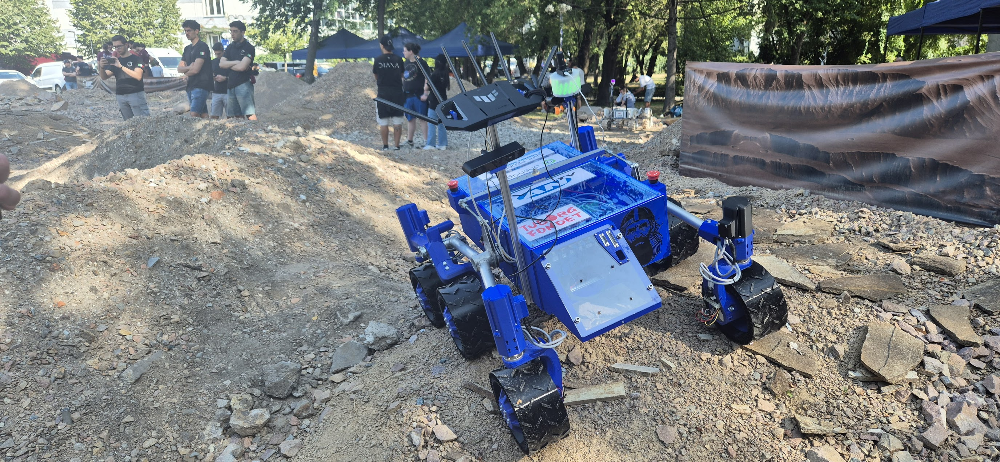

GORM Rover Software Overview
Welcome to the GORM Rover Software Overview, the rover consists of these main ROS 2 packages:
gorm_bringup- Main system launcher with robot state publisher and control nodesgorm_base_control- Ackermann Kinematics interface for 6-wheel, 4-steer kinematics (/cmd_vel→/motor commands)gorm_teleop- Manual control via joystick (teleop_twist_joy_node,joy-to-cmd_vel converter)gorm_sensors- Sensor drivers for RGBD cameras, IMU, etc.gorm_navigation- Navigation stack and RL-based navigation nodes and configsgorm_web_interface- Lightweight web server and web UI for monitoring and control
Table of Contents
- Installation: Provides a step-by-step guide to install the GORM Rover Software on the Rover.
- Launching: Explains how to launch the GORM Rover Software, including building and running the Docker images.
Launching the GORM Rover
The GORM rover can be launched in two modes: development mode (for active development) and production mode (for deployment). This page covers the development mode. For production deployment, see the Deployment Guide.
Quick Start with Docker (Development Mode)
-
Navigate to the Rover Software Directory: Open a terminal and navigate to the directory where the rover software (on the rover) is located.
cd /workspace/rover-software/docker -
Run the Docker Container and Attach to It: Start the Docker container that contains the rover software in development mode and attach to it.
./run.sh rover --dev # Attach to the running Docker container docker exec -it rover-software-dev bash -
Build the ROS2 Packages: Inside the Docker container, build the ROS2 packages to ensure everything is set up correctly.
colcon build source install/setup.bash -
Launch the Rover Software: Finally, launch the rover software using the provided launch file.
ros2 launch gorm_bringup bringup_teleop.launch.py -
BEFORE YOU START DEVELOPMENT: Make sure to set up your SSH keys and Git configuration as described in the Development Setup Guide.
Quick Start (Production Mode)
- Navigate to the Rover Software Directory: Open a terminal and navigate to the directory where the rover software (on the rover) is located.
cd /workspace/rover-software/docker - Run the Production Deployment: Start the production deployment which runs continuously and automatically restarts if it crashes or the system reboots.
./run.sh rover --prod # or with docker-compose: docker-compose up -d rover-deploy
Useful docker inspection commands
```bash
# List running containers
docker ps
# List all containers (including stopped)
docker ps -a
# View logs of a specific container
docker logs -f <container_name_or_id>
# Access a running container's shell
docker exec -it <container_name_or_id> bash
```
Development Setup
Multi-Developer Setup (ORIN System)
When developing on the shared ORIN system (192.168.50.100) with multiple developers, follow these steps:
-
Create personal workspace and clone:
# Replace 'abmo' with your initials/username mkdir -p ws/abmo_dev cd ws/abmo_dev git clone https://github.com/AAU-Space-Robotics/rover-software.git cd rover-software -
Configure Git locally for your identity:
git config user.name "Your Name" git config user.email "your.email@example.com" -
SSH Agent Setup for ORIN (192.168.50.100):
Add to your SSH config (
~/.ssh/config):Host 192.168.50.100 HostName 192.168.50.100 User gorm ForwardAgent yes IdentityFile ~/.ssh/id_ed25519 -
Install Keychain
sudo apt-get update sudo apt-get install keychain -
Setup SSH key evaluation:
Add to the bottom of your
~/.profileand~/.xprofile:eval $(keychain --eval --quiet id_ed25519)create the files if they don't exist.
-
Development with Docker (Recommended):
cd docker ./run.sh rover --dev -
Native development:
# Source ROS 2 source /opt/ros/humble/setup.bash # Build packages colcon build source install/setup.bash
Testing
ROS 2 Packages
# Build and test a specific package
colcon build --packages-select gorm_control
colcon test --packages-select gorm_control
Docker Testing
# Test in development container
cd docker
./run.sh rover --dev
# Test production build
./build.sh
./run.sh rover --prod
Development vs Production
Development Setup (rover service)
Use for: Active development, debugging, testing
- Source code mounted as volumes (
../src:/home/workspace/src) - Manual building required (
colcon build) - Interactive environment
- Code changes immediately available
Workflow:
./run.sh rover --dev
# or attach to the running container:
docker exec -it rover bash
# inside the container:
colcon build && source install/setup.bash
ros2 launch gorm_bringup bringup_teleop.launch.py
Production Setup (rover-deploy service)
Use for: Autonomous operation, field deployment, competitions
- Source code copied during image build
- Pre-built workspace (no manual building needed)
- Runs continuously in background with
restart: unless-stopped - Production-ready and stable
Workflow:
./build.sh
./run.sh rover --prod # starts the production deploy image in background
# or using docker compose directly:
# docker compose -f docker/docker-compose.yaml up -d rover-deploy
Key Differences
| Aspect | Development | Production |
|---|---|---|
| Source Code | Volume mounted | Copied during build |
| Building | Manual | Automatic during image build |
| Operation | Manual start/stop | Continuous background operation |
| Updates | Edit files directly | Rebuild image |
| Use Case | Development & testing | Deployment & autonomous operation |
Deployment Files
| File | Purpose |
|---|---|
run.sh | The main script for starting services in different modes (e.g., rover --dev, rover --prod). |
docker-compose.yaml | Defines all services, e.g. rover, rover-deploy, cameras, etc. |
Dockerfile | Defines the multi-stage build environment for both development and production. |
build.sh | Script to build the production Docker image. |
stop.sh | A simple script to stop all running services defined in docker-compose.yaml. |
attach.sh | Helper script to quickly attach to the main rover container. |
entrypoint.sh | The entrypoint for the containers. |
Important: Production deployment runs continuously in the background and will automatically restart if it crashes, unless manually stopped.
ROS 2 Interface Guide
This page documents the ROS 2 topics, services, and message types for the GORM rover.
NOTE: Please update this documentation if you discover new topics or services, or if existing ones change.
Core Topics
Control & Navigation
| Topic | Message Type | Description |
|---|---|---|
/cmd_vel | geometry_msgs/Twist | Primary velocity command for rover motion |
/goal_pose | geometry_msgs/PoseStamped | Navigation goal for autonomous systems |
/motor_commands | std_msgs/Float64MultiArray | Low-level commands for the 6-wheel, 4-steer system |
Localization & Odometry
| Topic | Message Type | Description |
|---|---|---|
/odom | nav_msgs/Odometry | Odometry data for pose estimation |
/amcl_pose | geometry_msgs/PoseWithCovarianceStamped | Robot pose from the AMCL localization system |
/tf | tf2_msgs/TFMessage | Dynamic and static coordinate transforms |
/tf_static | tf2_msgs/TFMessage | Static coordinate transforms |
Teleoperation
| Topic | Message Type | Description |
|---|---|---|
/joy | sensor_msgs/Joy | Raw joystick input for manual control |
Sensor Topics
ZED Camera (Front)
| Topic | Message Type | Description |
|---|---|---|
/zed_front/zed/depth/depth_registered | sensor_msgs/Image | Registered depth image |
/zed_front/zed/rgb/image_rect_color | sensor_msgs/Image | Rectified color image |
/zed_front/zed/rgb/image_rect_color/compressed | sensor_msgs/CompressedImage | Compressed color image for web streaming |
/zed_front/zed/point_cloud/cloud_registered | sensor_msgs/PointCloud2 | Registered 3D point cloud |
/zed_front/zed/imu/data | sensor_msgs/Imu | IMU data from the camera |
/zed_front/zed/pose | geometry_msgs/PoseWithCovarianceStamped | Visual odometry pose from the camera |
GNSS (if enabled)
| Topic | Message Type | Description |
|---|---|---|
/zed_front/zed/fix | sensor_msgs/NavSatFix | GNSS position data from ZED camera fusion |
U-blox GNSS
| Topic | Message Type | Description |
|---|---|---|
/diagnostics | diagnostic_msgs/DiagnosticArray | Diagnostic information from the U-blox driver |
/fix | sensor_msgs/NavSatFix | GNSS position fix |
/fix_velocity | geometry_msgs/TwistWithCovarianceStamped | GNSS velocity information |
/navclock | ublox_msgs/NavCLOCK | Navigation clock solution |
/navinfo | ublox_msgs/NavINFO | Navigation information |
/navposecef | ublox_msgs/NavPOSECEF | Position solution in ECEF coordinates |
/navposllh | ublox_msgs/NavPOSLLH | Position solution in geodetic coordinates |
/navsol | ublox_msgs/NavSOL | Navigation solution information |
/navstatus | ublox_msgs/NavSTATUS | Navigation status |
/navvelned | ublox_msgs/NavVELNED | Velocity solution in NED frame |
/parameter_events | rcl_interfaces/msg/ParameterEvent | U-blox node parameter updates |
Services
Motor Control
| Service | Service Type | Description |
|---|---|---|
/start_motors | std_srvs/srv/Trigger | Initializes and enables all motors |
/shutdown_motors | std_srvs/srv/Trigger | Safely disables all motors |
Key Message Types
geometry_msgs/Twist: Linear and angular velocitygeometry_msgs/PoseStamped: Position and orientation with a timestampsensor_msgs/Image: Raw image datasensor_msgs/CompressedImage: Compressed image for low-bandwidth streamingsensor_msgs/PointCloud2: 3D point cloudsensor_msgs/Joy: Joystick button and axis statesnav_msgs/Odometry: Estimated pose and velocitystd_srvs/srv/Trigger: Standard service for simple actions
Topic Conventions
- Global Topics: Core topics like
/cmd_veland/odomare in the global namespace. - Namespacing: Sensors are namespaced by their position (e.g.,
/zed_front). - Standardization: Follows ROS REP-105 for common topic names.
Contributing Overview
Welcome to the GORM rover project! This guide will help you understand our development practices and contribution process to ensure smooth collaboration.
🚨 Important Rules
NEVER commit directly to main or dev branches. All changes must go through the Pull Request process.
Key Points for Contributors
- System releases use Git tags with format
vMAJOR.MINOR.PATCH(e.g.,v1.0.0) - ROS 2 packages version independently using
MAJOR.MINOR.PATCHformat in theirpackage.xml - All changes must be made through Pull Requests
- Follow our branching strategy and commit conventions
- Test your changes before submitting PRs
- Update documentation as needed
Version Updates
When making changes that affect versioning:
- Breaking changes: Increment MAJOR version
- New features: Increment MINOR version
- Bug fixes: Increment PATCH version
Always update package.xml when changing ROS 2 package versions.
Getting Help
- Issues: Use GitHub Issues for bugs and feature requests
- Discussions: Use GitHub Discussions for questions and ideas
- Maintainers: Tag
@AAU-Space-Roboticsmaintainers for urgent matters
Remember: Never commit directly to main or dev. Always use Pull Requests for code changes.
Branching Strategy
We follow a structured branching approach to maintain code quality and enable parallel development:
Branch Types
main- Production-ready code. Protected branch.dev- Integration branch for features. Protected branch.feature/- New features and enhancementsbugfix/- Bug fixes for existing functionalityhotfix/- Critical fixes that need immediate deploymentrelease/- Release preparation and versioning
Branch Naming Convention
Use descriptive names with the appropriate prefix:
feature/add-navigation-controller
feature/improve-motor-control
bugfix/fix-odometry-calculation
bugfix/resolve-docker-build-issue
hotfix/critical-localization-failure
release/v1.2.0
Workflow
-
Create feature branch from
dev:git checkout dev git pull origin dev git checkout -b feature/your-feature-name -
Work on your changes and commit regularly
-
Push your branch and create a Pull Request to
dev -
After review and approval, merge to
dev -
For releases, create a release branch from
devand merge tomain
Commit Guidelines
We use Conventional Commits to maintain a clear and searchable commit history.
Commit Message Format
<type>[optional scope]: <description>
[optional body]
[optional footer(s)]
Types
feat:- A new featurefix:- A bug fixdocs:- Documentation changesstyle:- Code style changes (formatting, no logic changes)refactor:- Code refactoring without changing functionalityperf:- Performance improvementstest:- Adding or updating testschore:- Maintenance tasks, dependency updatesci:- CI/CD configuration changesbuild:- Build system or external dependency changes
Scopes (Optional)
Use scopes to indicate the area of change:
ros2:- ROS 2 packages and nodesdocker:- Docker configuration and toolingcontrol:- Control system componentsperception:- Perception system componentsteleop:- Teleoperation functionalitynav:- Navigation stack components
Examples
feat(control): add PID controller for motor speed regulation
fix(nav): resolve timeout issue in planner server subscription
docs: update README with new installation instructions
style(ros2): format Python code according to PEP 8
refactor(docker): simplify compose service configuration
chore: update dependencies to latest stable versions
Pull Request Process
Before Creating a PR
-
Ensure your branch is up to date:
git checkout dev git pull origin dev git checkout your-branch git rebase dev # or merge dev into your branch -
Test your changes:
# For ROS 2 packages colcon build --packages-select <package_name> colcon test --packages-select <package_name>
PR Requirements
- Link the related issue: Use
Fixes #<issue-number>orCloses #<issue-number> - Clear title: Use conventional commit format for PR title
- Detailed description: Explain what, why, and how
- Test coverage: Include test results or explain why tests aren't needed
- Breaking changes: Clearly document any breaking changes
PR Template
## Description
Brief description of changes made.
## Type of Change
- [ ] Bug fix (non-breaking change which fixes an issue)
- [ ] New feature (non-breaking change which adds functionality)
- [ ] Breaking change (fix or feature that would cause existing functionality to not work as expected)
- [ ] Documentation update
## Related Issues
Fixes #<issue-number>
## Testing
- [ ] I have run the existing tests
- [ ] I have added tests for my changes
- [ ] All tests pass locally
## Checklist
- [ ] My code follows the project's style guidelines
- [ ] I have performed a self-review of my code
- [ ] I have commented my code, particularly in hard-to-understand areas
- [ ] I have updated documentation as needed
- [ ] My changes generate no new warnings
- [ ] I have tested this change in the appropriate environment (Docker/hardware)
## Additional Notes
Any additional information, deployment notes, or concerns.
Review Process
- Automated Checks: All PRs must pass automated linting and build checks
- Code Review: At least one maintainer review required
- Testing: Verify changes work in relevant environments
- Documentation: Ensure documentation is updated if needed
Code Style Guidelines
Python (ROS 2 Packages)
- Follow PEP 8 style guide
- Use type hints where appropriate
- Maximum line length: 120 characters
- Use docstrings for classes and functions
- Import order: standard library, third-party, local imports
Example
#!/usr/bin/env python3
from typing import Optional
import rclpy
from rclpy.node import Node
class MyNode(Node):
"""Brief description of the node's purpose."""
def __init__(self) -> None:
super().__init__('my_node')
self.get_logger().info("Node initialized")
C++
- Follow Google C++ Style Guide
- Use camelCase for variables and functions
- Use PascalCase for classes and structs
- Maximum line length: 100 characters
- Use meaningful variable names
Example
#include <rclcpp/rclcpp.hpp>
class MyNode : public rclcpp::Node
{
public:
MyNode() : Node("my_node")
{
RCLCPP_INFO(this->get_logger(), "Node initialized");
}
private:
void processData();
};
Documentation
- Update README.md for significant changes
- Add docstrings/comments for complex logic
- Update package.xml descriptions when needed
- Include examples in documentation
Installation Guide
Here is a step-by-step guide to install the ROS2 Navigation Stack on the Rover. This is mainly in the context of reinstalling the software on the rover itself after a fresh OS installation, and is not necessary for development on your own machine.
Hardware Requirements
- Computer: A Nvidia Jetson Orin with Jetpack 6.1.
- Sensors: 2x Zed 2i Cameras,
Prerequisites
- Docker
- Docker Compose
- Nvidia Container Toolkit
- Resolve Joy Driver Issues: If you encounter issues with the joystick driver, you can resolve them by opening a terminal and running the following commands: see Joy Driver Issues.
sudo git clone https://github.com/paroj/xpad.git /usr/src/xpad-0.4 sudo dkms install -m xpad -v 0.4
Installation Steps
-
Connect to the Rover: SSH into the rover's computer using the following command:
ssh gorm@192.168.50.100 # or ssh gorm@<ROVER_IP_ADDRESS>The default password is
gorm. -
Clone the Repository: Clone the GORM Rover Software repository to the rover's computer.
git clone https://github.com/aaU-Space-Robotics/rover-software/ cd rover-software -
Build & Run the Docker Images: Navigate to the
dockerdirectory and start the main rover service in development mode (this will build images and mount the source code).cd docker ./run.sh rover --prod